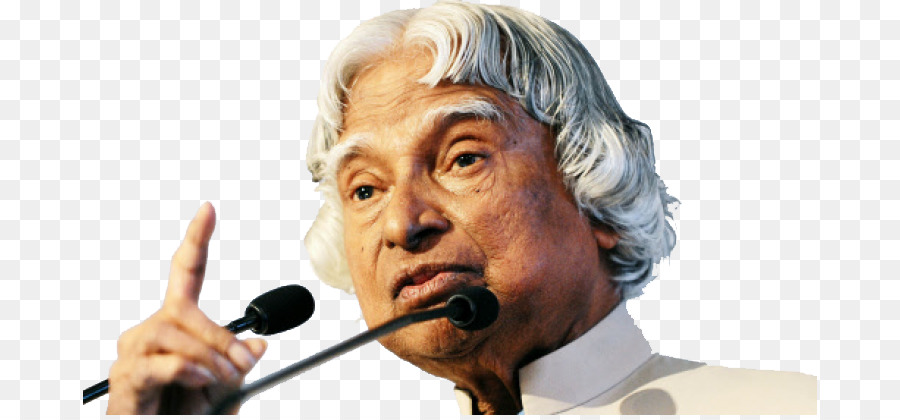

A.P.J Abdul kalam
 Great Indian scientist and politician who played a leading role in the development of India’s missile and nuclear weapons programs.about the legend
☛ A.P.J. Abdul Kalam, in full Avul Pakir Jainulabdeen Abdul Kalam, was born on October 15, 1931, in Rameswaram, Tamil Nadu, India.
☛ He served as the 11th President of India from 2002 to 2007.
☛ Kalam earned a degree in aeronautical engineering from the Madras Institute of Technology and in 1958 joined the Defence Research and Development Organisation (DRDO).